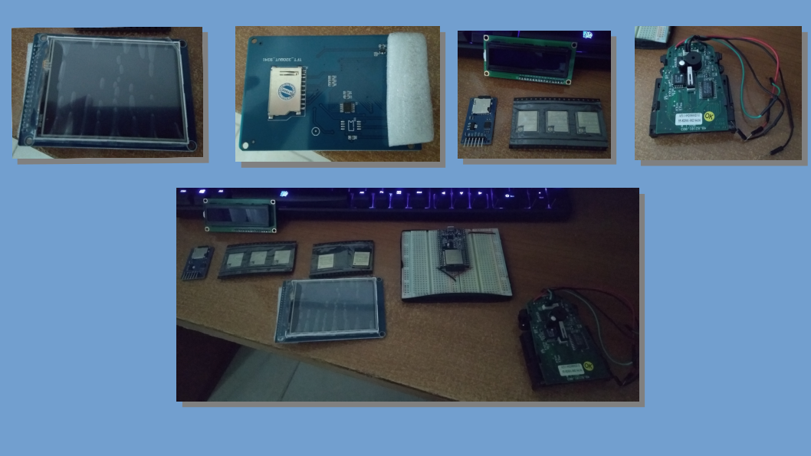

¿Buscando inspiración? Fijate también la página de Ideas para programar
fades
Fixear algún bug o meter algún feature en fades (fades is a system that automatically handles the virtualenvs in the cases normally found when writing scripts and simple programs, and even helps to administer big projects).
El proyecto está acá.
Propone: FacundoBatista
Asoc Members
Terminar de emprolijar algunas cosas del Sistema de Miembros de la Asociación Civil, y generar algunos listados y páginas para operar que estamos necesitando.
El proyecto está acá.
Propone: FacundoBatista
ESP32 - Micropython:
Hackear estos dispositivos, utilizando Micropython o su versión Loboris.
El Proyecto (General): Hacer un framework MVC bajo MicroPython para configurar un ESP32 con propositos generales.
Para Hackear (hardware): (2)ESP32, (2) Arduino, (1) Arduino Nano, Display touch con lector de tarjeta SD, Lector de Tarjeta SD, ESP-8266 con programador para armar, luces leds, Potenciometros, Display 16x2 I2C, Display 16x4 I2C, display de 7 segmentos 1 dígito, display de 7 segmentos 4 dígitos, relays etc...
Material Bibliográfico: Programming with MicroPython (Nicholas H. Tollervey), MicroPython for ESP32 Development Workshop (Agus Kurniawan), Micropython for ESP32 Doc.
Software: ampy, picocom (o terminal de puerto serie para conectarse con el esp)
Propone: @gsgerman
Intro a Python
Si hay personas nuevas en el lenguaje, me animo a dar una intro, adaptando al nivel que haga falta.
Propone: @fisadev
OpenLex
Sistema para abogados y estudios jurídicos, hecho en web2py. Necesita una buena revisión, pasarlo a la versión nueva del framework, revisarlo, y quererlo un poquito
Más info ver acá o bien unirse a grupo Telegram
Mirar resumen tutorial de las features en video
Propone: Marian
Sateye
Hace rato arranqué y después abandoné una aplicación para visualización de satélites y otras cosas en órbita. Hay otras alternativas, pero todas me parecieron siempre re poco usables, por eso quería hacer algo mejor. La idea es retomarla y sacar una primer versión andando publicable.
Repo: https://github.com/fisadev/sateye
Propone: @fisadev
Espadas! (actividad recreativa)
Llevo algunas espadas de práctica y equipo de protección, para el que quiera aprender cosas básicas de artes marciales históricas europeas (no se daban garrotasos a lo bruto, eso es verso de hollywood :p).
Propone: @fisadev
Grillo
Hoy hice Grillo, una herramienta que permite mandar datos de una máquina a otra re re fácil, usando micrófono y parlantes para transmitir y leer la data por audio. Tiene magias como esta:
Y después de escuchar un ruido, máquina 1 tiene en su clipboard el contenido que tiene el clipboard de máquina 2. Sirve para mandar textos y archivos también.
Peeeeeeeeeero, la lib que hace la comunicación por audio solo banca mandar mensajes de 32 bytes. Durante el pycamp podríamos reemplazarla por otra que no se si es simple de usar, o pensar en algo que use muchos mensajes, coordinando la comunicación, etc.
Repo: https://github.com/fisadev/grillo
Propone: @fisadev
Coding dojo rotativo rápido
Juego para divertirnos todos juntos mientras programamos algo sencillo. ¡No importa tu nivel de Python o programación! La idea es divertirse :)
Propone: FacundoBatista
Experimento: FSM-flow-django-whatever
Experimento que quiero hacer: una especie de máquina de estado automática para sistemas de gestión basados en flujos preestablecidos, con Django, de manera que sea todo automático en función de algunas definiciones.
Pero repito, es un experimento. Todavía no sé ni la forma de encarar esta actividad.
Proponer: FacundoBatista
EventoL
EventoL es un proyecto libre que busca facilitar la administración y difusión de eventos relacionados con el software libre. Ya tiene varios años de desarrollo, esta hecho en Django (con python3) y React (en algunas partes del frontend), se viene usando en FLISoL a nivel nacional hace 4 años (también se va a usar en el 2019) y actualmente contamos con el apoyo de USLA para la infraestructura. La idea principal es plantearlo como remplazo a las plataformas pagas para las distintas comunidades relacionadas con el software libre. En la pycamp pasada no solo se trabajo en el proyecto sino que se confirmo su uso para la comunidad de PyAr, logrando utilizar EventoL en el PyDay de Rosario y en la PyCon 2018 con éxito. La propuesta para la pycamp es seguir desarrollando, agregarle las funcionalidades que le falten para lograr su uso en mas eventos y agregar las funcionalidades que hacen falta para que un evento pueda gestionarse completamente.
En cuanto a tareas hay de todo tipo para hacer tanto de infraestructura y configuracion como de desarrollo tanto en la parte frontend como backend.
Les dejo un par de links:
Github: https://github.com/eventoL/eventoL
Documentación: http://eventol.github.io/eventoL/#/
Instancia actual en USLA: https://eventol.flisol.org.ar/
Instancia actual en PyAr: https://eventos.python.org.ar/
Propone: FedeG
Algunos arreglos en la Wiki de PyAr
La wiki donde estás mirando esta misma página necesita algunos arreglos. Por ejemplo, no es modificable en celulares. Anda como el traste la interacción con el autocorrector. Me gustaría poder arreglar esto, pero nunca toqué el código de sitio nuevo de PyAr. La idea de fondo esta actividad es que cualquier persona que vaya al PyCamp pueda aprender cómo hacer arreglos en nuestro sitio.
Propone: alecu
Juegos para ventilador con Micropython
El pycamp pasado llevé un ventilador que tiene atornillado una tira de leds, y le estuvimos poniendo micropython. Esta vuelta no me resulta muy fácil llevar el ventilador, por lo que voy a llevar un "simulador de ventilador" que permite hacer juegos con micropython usando sólamente una computadora. Por ahora es sólo una prueba de concepto que muestra unas navecitas, el objetivo de la actividad es tener algo jugable, y de ser posible que sea también divertido!
Propone: alecu
Juegos de mesa (actividad para la noche)
Llevo algunos juegos de mesa, rápidos y divertidos:
Spyfall
Secret Hitler
y puede que algún otro más.
Propone: alecu
PyTest en 20 minutos
Charlita/discusión de cómo usar pytest, estructurar los tests, reutilizar código, etc.
Propone: fisa (pide: facu)
Chat para PyCamps
Un chat descentralizado sin autenticación, que autodescubra los clientes, y sin necesidad de internet, para los eventos como el pycamp. Algunas funcionalidades: - Chat uno a uno - Chat grupales - Canales - Envío de archivos uno a uno
Excusa: aprender algo de asyncio y pyQT/kivy/etc para la interfaz Propone: matuu